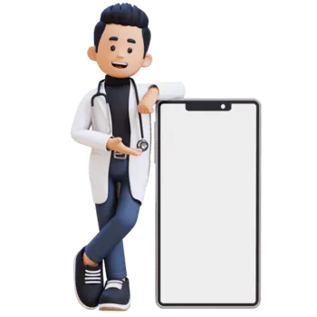

Ganar tiempo no alcanza: hace falta saber qué hacer con él.
→ una ficha
→ una acción por doctor
Cuatro pasos para llegar, tres opciones evaluadas.
Dos síntomas, cuatro KPIs. Números, no adjetivos.
Línea base de 45 minutos y churn rescatable.
Priorizar y consolidar, sin abrir nada nuevo.
Piloto con grupo de control y un criterio para decidir.
Ahorra tiempo. No cambia la decisión.
Sirve, pero sin herramienta nadie lo sigue.
Resuelve la causa. Los otros dos son sus fases.
La IA entra en tres lugares. En ninguno decide sola.
Reglas contra su propia línea base. En el mes 4, un modelo entrenado con el piloto afina el orden.
La IA redacta el resumen y la agenda. Al correo a las 7:00.
La IA vuelve campos la nota o la transcripción que ya existe. La persona confirma.

Un día completo de un Customer Success Specialist, en tiempo real.
Compara su actual contra su histórico.
A 30 días ya es tarde para bajar de plan.
Rescatar antes que crecer. Sin alertas repetidas.
La máquina etiqueta. La persona archiva.
Seis meses: cuando el churn se puede leer de verdad.
Dos palancas, medibles en ocho semanas. Upsell llega a 28 en el año dos: retener va primero.
Ocho con la herramienta, veinte sin ella. Mismo periodo.
8 especialistas con Doctor 360, 20 sin él. Misma línea de partida.
Los 28, formados por training.
Se leen los cuatro KPIs. Sin piloto: mes 4.
Con los desenlaces del piloto como etiquetas, la IA afina el ranking.
La preparación bajó 35% o más
6 de 8 especialistas lo usan solos
El rescate supera al grupo de control
| Riesgo | Qué pasa si ocurre | Cómo se reduce |
|---|---|---|
| El motor se equivoca | Un doctor en riesgo no aparece | Nadie sale de la vista. Revisión semanal de los que se fueron sin marca. |
| No lo usan | Herramienta bonita, cero adopción | Llega al correo. Training forma. Se revisa en la semana 8. |
| Datos sucios en Salesforce | Fichas incompletas, confianza perdida | La ficha muestra qué falta, no lo inventa. |
| Texto con datos de pacientes | Incumplimiento de datos sensibles | Texto redactado. Solo herramientas aprobadas. |
| Exceso de alertas | El CS deja de confiar y las ignora todas | Una acción por doctor. Nunca alertas repetidas. |
Además de la ley, los estándares de seguridad que Doctoralia ya certifica.
Scripts de Python. La IA entra en momentos puntuales, no en todo el flujo.
Si funciona en México, el manual queda listo para los otros 12 países.
Una sesión al mes por doctor · 150 MXN por hora cargada · precios de lista Starter $1,740, Plus $2,340, VIP $2,970 (+IVA, anual) · 60% del churn es rescatable por CS · rampa de adopción 2 meses a 30 min · detección 90% respaldada en backtest de un motor similar · rescate 43% dentro del rango publicado 14–51%.
Escenarios: conservador churn 3.7% y upsell 22% · base 2.94% y 25.8% · optimista 2.9% y 29.5%.